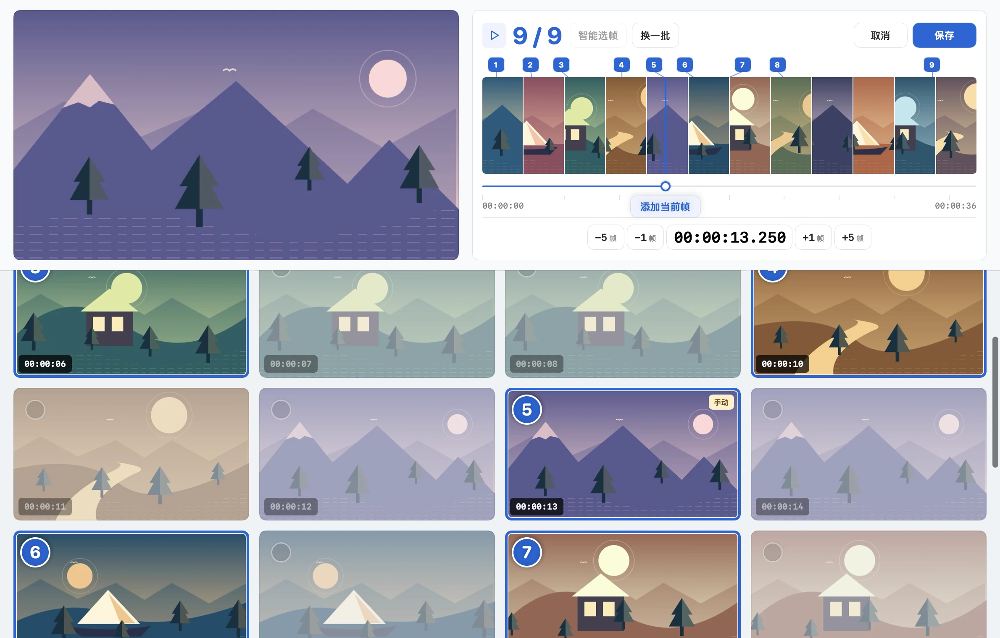

在 ShotMap 中手动选帧并替换分镜画面
用时间轴定位想要的瞬间，手动保留一帧，再自动补齐剩余位置。
示例使用 macOS 13 或更高版本上的 ShotMap 0.2.20，以及一段 36 秒、960 × 540 的 Color Trail.mp4。请把视频放在有写入权限的文件夹中。
- 先用 Color Trail.mp4 生成 3 × 3 的 JPG。在主界面选中该分镜图，点击右下角的手动选帧。
- 在时间框输入 00:00:13.250，按回车定位。需要查看前后相邻画面时，用 −1 或 +1 逐帧微调。
- 点击时间轴下方的添加当前帧，再点击该帧的候选卡片完成选中。卡片和时间轴上会出现对应的数字标记。
- 点击智能选帧补齐其余八帧。核对计数为 9 / 9，点击保存。

核对成品
回到分镜预览确认选中的画面已出现，再通过在 Finder 中显示打开新 JPG。手动选帧前生成的 JPG 仍在视频同目录。